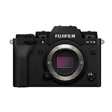

CAMERAS

|
Size: Compact
Pattern Name: camera film
Brand Fujifilm
Special Feature Selfie Mirror
Film Format Type Instax Mini
Item Weight 1814 Grams
Item Dimensions LxWxH 35.6 x 31.8 x 9.5 Centimeters
About this item
- Perfect Gift- Fit for Birthday's, Baby Shower, Rakshabandhan or any other celebration
- Memories For Future- Click your beautiful memories and save them with Instax Album and Instax Magnets
- Live Life and Play with five stylish colors. Selfies & Close-ups Never look better. high performance flash automatically calculates surrounding brightness and adjusts shutter speed. High-Key mode : Take brighter pictures with a soft look - perfect for portraits. Exposure Control - Automatic, Lv 5.0 to 14.5
just in 3 days deliveried
Click Here.To Contact the seller
|
|
₹4567.87
|
.jpeg)
|
Brand Canon
Model Name EOS R100 RF-S18-45mm IS STM Kit
Maximum Webcam Image Resolution 24.1 MP
Photo Sensor Size APS-C
About this item
- Sensor: Full frame APS-C CMOS with 24.1MP (brilliant resolution for large prints and image cropping)
- Image Processor: DIGIC 8 (important for speed and accuracy of autofocus and burst photography)
- Video Resolution: Full HD video with fully manual control and selectable frame rates (great for precision and high-quality video work)
just in 3 days deliveried
Click Here.To Contact the seller
|
|
₹46,567.52
|